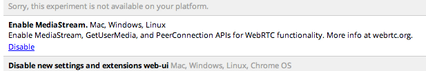

Przechwytywanie audio i wideo w HTML5
Posted on by Mads Kjaer - 3 comments
Obsługiwane przeglądarki:Wstęp
Aby wszystkie cześci artukułu działały poprawnie należy otworzyć go z najnowszej przeglądarki Opera lub Chrome.
W Chrome +18 należy w pasku wyszukiwania wpisać:
Następnie włączyć getUserMedia():

W Operze sytuacja wygląda następująco, trzeba ściągnąć najnowszą wersje Experymentalną przeglądarki:
Droga do getUserMedia ()
Jeśli nie jesteś świadomy tej historii, jakim sposobem dotarliśmy do getUserMedia () API to bardzo ciekawa historia.
Kilka wariantów "Media Przechwytywanie API" zmieniały się na przestrzeni ostatnich kilku lat. Wielu ludzi uznaje potrzebę, aby móc uzyskać dostęp do rodzimych urządzeń w sieci, ale to doprowadziło wszystkich i ich mamy do ułożenia nowej specyfikacji. Sprawy stała się tak poplątane, że W3C ostatecznie zdecydowali się stworzyć grupę roboczą. Ich jedynym celem? Sens szaleństwa!Urządzenie Polityka API (DAP) Grupa robocza ma za zadanie skonsolidować + standaryzacji mnóstwo propozycji.
Postaram się podsumować, co się stało w 2011 roku ...
Runda 1: HTML Mediów Przechwytywanie
HTML Mediów Przechwytywanie było PDN pierwszym go dążącym do standaryzacji przechwytywanie obrazu w internecie. Jego działanie polega na przeciążeniu <input type="file"> i dodawanie nowych wartości do zaakceptowania parametru.Jeśli chciałbyś, umożliwić użytkownikom zrobienie zdjęcie siebie z kamery, to możliwe uchwycić aparat =:
Nagrywanie wideo lub audio jest podobne:
Przyznacie że ładnie? Szczególnie podoba mi się, że używa ponownie plik wejściowy. Semantycznie, to sprawia, że wiele sensu. Przypadku, gdy dany "API" jest daleki jest możliwość zrobić czasie rzeczywistym efektów (np. renderowania dynamicznych danych kamery do <canvas> i zastosować WebGL filtrów). HTML Mediów przechwytywanie tylko pozwala na nagrywanie pliku multimedialnego lub zrobić zdjęcie w czasie.
Wsparcie:
> Android 3.0 przeglądarka - jedno z pierwszych wdrożeń.
> Chrome dla Androida (0.16)
Przykład do tego jest Tutaj
Runda 2: Element urządzenia
Wielu myślało, HTML przechwytywania mediów była zbyt ograniczające, więc nowa specyfikacja okazało się, że obsługiwany każdy rodzaj (przyszłych) urządzenia. Nic dziwnego, że projekt wezwał do stworzenia nowego elementu, element <device>, która stała się poprzednikiem getUserMedia (). Opera była jedną z pierwszych przeglądarek, aby utworzyć pierwsze implementacje przechwytywania wideo oparte na elemencie <device>. Wkrótce potem (tego samego dnia być precyzyjne), WHATWG postanowił złom tag <device> na rzecz innego, oraz, Comer tym razem JavaScript API o nazwie navigator.getUserMedia ().Tydzień później, Opera położyć nowe buildy, które obejmowały wsparcie dla zaktualizowanego getUserMedia () spec. Później tego roku, Microsoft dołączył do partii zwalniając laboratorium dla IE9 wspiera nową specyfikację.
Oto jak <device> wyglądałaby tak:
Wsparcie:
Niestety, nie wydano przeglądarkę zawierającą <device>. Jeden mniej API martwić myślę :) <device> miał dwie wielkie rzeczy będzie dla niego jednak:.1). Był semantyczny i 2) to był łatwo rozszerzalny do obsługi więcej niż tylko urządzenia audio / wideo. Weź oddech. Te rzeczy zmieniają się szybko!
Runda 3: WebRTC
WebRTC to otwarty projekt, który ma na celu umożliwienie komunikacji w czasie rzeczywistym za pośrednictwem prostych API dla języka JavaScript. W efekcie, z poziomu przeglądarki, bez dodatkowych wtyczek, ma być możliwe przesyłanie plików i prowadzenie rozmów, również wideo. Inicjatywę wspierają Mozilla, Google i Opera. API pojawiają się tu i tam, ale jak dotąd mało kto zdaje sobie sprawę z ich obecności w przeglądarce. Jednak idzie ku lepszemu.
Opera zaimplementowała API w wydanej pod koniec lutego 12 wersji przeglądarki Opera Mobile. Na liście promowanych nowości znalazł się WebGL, ale mało kto zauważył, że Opera Mobile 12 przechodziła test sprawdzający obecność WebRTC. Za pomocą prostej aplikacji da się nawet skorzystać z możliwości rozmowy z poziomu Opery Mobile.
Mozilla z kolei zaprezentowała możliwości komunikacji za pośrednictwem WebRTC w Firefoksie podczas konferencji IETF 83 w Paryżu w zeszłym tygodniu. W demonstracji Mozilli możemy zobaczyć prostego klienta, umożliwiającego rozmowy wideo, opartego na rozszerzeniu Personas i SocialAPI. Mozilla nazwała ten dodatek "Rainbow" Rainbow Download
Google zaimplementował do swojej przeglądarki WebRTC od Chrome 18+.
 Z końcem 2013 roku Technologia ta będzie już standardowo w każdej przeglądarce
Z końcem 2013 roku Technologia ta będzie już standardowo w każdej przeglądarce(taki jest termin ustalony przez W3C i WHATWG)
A teraz przykłady..
1. Jako pierwszą strone oferującą webRTC chciałbym wam przedstawić : http://apprtc.appspot.com/
Umożliwia ona rozmowe typu Chat z drugą osobą na jednym z dostępnych kanałów od "=1" do "=99999999*"
Pliki do tego przykładu są dostępne Tutaj
2. Drugim przykładem jest ta oto strona : http://miernicki.com/cam.html
To prosty przykład pokazyjący możliwość zrobienia zdjęcia
bardziej zaawansowany przykład : http://html5camera.com/
3. Prosty przykład dla każdego : Tutaj
Oto przykład który sam może zainicjalizować gotowy plik:
Ciekawe Linki
Strona projektu WebRTC: http://www.webrtc.org/homeStrona orginalengo artukułu: http://www.html5rocks.com/en/tutorials/getusermedia/intro/
W przyszłości: http://www.youtube.com/watch?v=vL82X3M5H8A